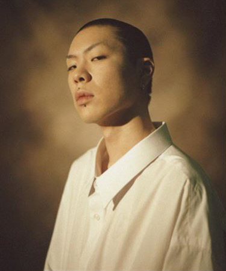
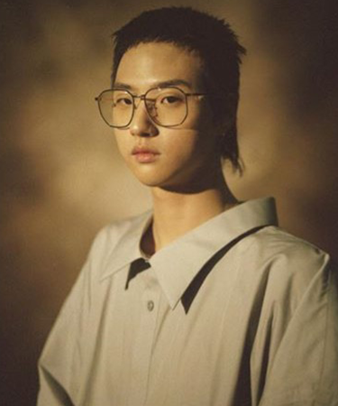
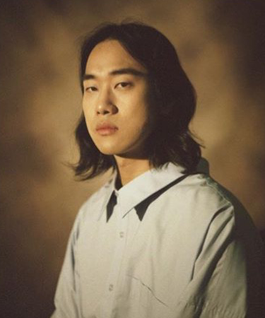
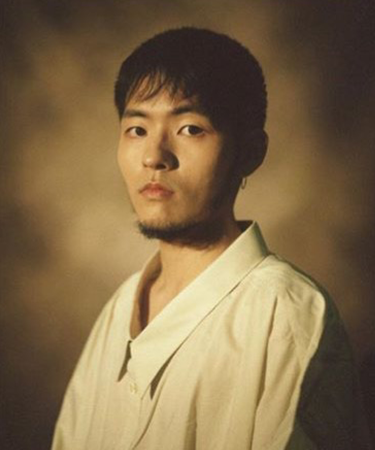

Oh Hyuk
출생 : 1993년 10월 5일
포지션 : 보컬 , 리더 , 기타
신체 : 176cm
학력 : 홍익대학교 예술학과

Yim Hyun Jae
출생 : 1993년 7월 31일
포지션 : 기타
신체 : 182cm
학력 : 서울예술대학교

Yim Dong Gun
출생 : 1993년 4월 4일
포지션 : 베이스
신체 : 175cm
학력 : 호원대학교 실용음악과

Lee In Woo
출생 : 1993년 6월 14일
포지션 : 드럼
신체 : 174cm
학력 : 서울실용음악고등학교